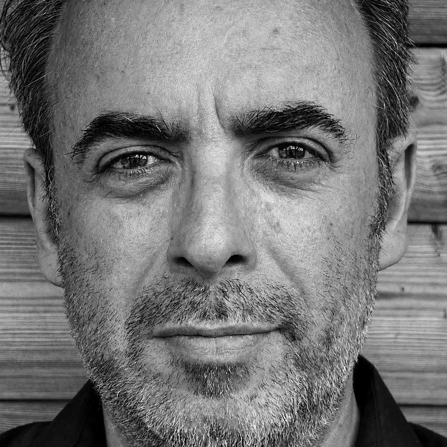
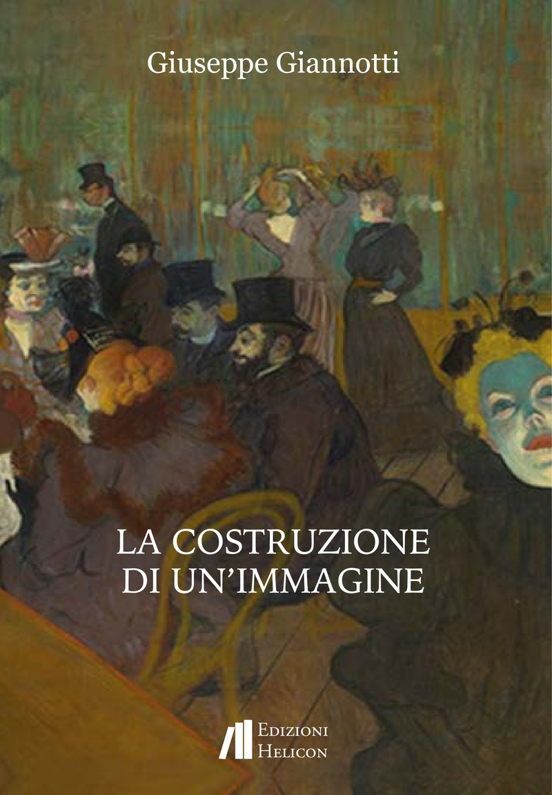

Poesie dalla Lunigiana,
un mare di monti.
Giuseppe Giannotti scrive poesia per sottrazione: immagini concrete, nessun commento, chiuse che non consolano. Vive e lavora ad Aulla, dove fa il farmacista. Conduce Stregati, un programma notturno di poesia.
Garder le calme devant la dissonance Claude Sautet, epitaffio a Montparnasse
Libri
La Costruzione di un'Immagine

Novantacinque testi, dalla Remora che apre il libro a Primavera che lo chiude, con una serie di haiku e un ciclo di poesie della Lunigiana. In esergo e in congedo, due passi di Camillo Sbarbaro.
Il libro è stato Premio Opera Prima alla Via dei Libri di Pontremoli e secondo premio al Premio Pasolini-Parigi 2026.
Copia firmata dall'autore · 15,99 €, spedizione in tutta Italia. Per una dedica, dopo l'ordine scrivi il nome a beppegiannotti4@gmail.com.
Acquista dall'editore · 14 × 20 cm, stampa a colori
Primavera
La nitidezza primaverile si scioglie nel brodo primordiale di un cuore oscuro. i bordi incolti del sentiero scalcinato allevano soffioni che decollano per poi eclissarsi torbidamente lontano
La Balena nella notte
Una balena dalla pancia bianca spiaggiò nella notte esangue al vento e alla sabbia dall'alta scogliera impotenti fin dall'alba i bagnanti non si mossero a pietà.
Maggio a Milano
Frenesia tranquilla di foglie di pioppo sospeso sulla terra entrano piccoli esseri invisibili, tutto in fretta tutto finito voglia di pace di niente di sonno sul marmo uccelli beccano lisci da piatti spezzati un raggio di buio esce da un cassetto aperto.
Una seconda raccolta, Ucronie, è in lettura presso l'editore.
Premi
Riconoscimenti
- Premio Pasolini-Parigi — secondo premio, poesia edita, per La Costruzione di un'ImmagineParigi, Montmartre
- Premio Val di Magra – Roberto Micheloni – Città di Aulla, XXXIII edizione — secondo premio, poesia singola, per Gennaio; segnalazione di merito per La Costruzione di un'Immagine
- Premio Letterario Casentino, 51ª edizione — primo premio «Storie di Montagna» per Montevignale di Lunigiana; premio speciale della giuria per la poesia ineditaPratovecchio Stia
- Premio Ossi di Seppia – Solstizio d'Estate — secondo premio assoluto, poesia singola, per GennaioArma di Taggia · giuria presieduta da Lamberto Garzia
- Premio La Ginestra di Firenze — secondo premio assoluto, poesia inedita
- Premio I Colori dell'Anima, XIV edizione — Gran Premio della Giuria nelle sezioni poesia e «Le Regioni dell'Anima»
- Premio Byron — premio della critica per Schiene
- Premio Galloni — menzione d'onore per ZelmiraMontignoso
- Premio Città di Varallo, XIV edizione — menzione di merito
- Premio Internazionale di Letteratura Città di Como, XIII edizione — selezionato, sezione poesia ineditagiuria presieduta da Andrea Vitali
- Premio Internazionale La Via dei Libri — Premio Opera Prima per La Costruzione di un'ImmaginePontremoli
- Premio Ossi di Seppia — miglior autore regionale per I Poeti
- Premio Internazionale Casentino — premio speciale della giuria per La Costruzione di un'Immagine; menzione d'onore per Tre Finestre e La Ragazza dal Collo d'Anatra
- Concorso «per Modigliani», Le Cicale Operose — secondo premio assoluto per La Ragazza dal Collo d'AnatraLivorno
- Premio Besio 1860, sezione Camillo Sbarbaro — premio speciale della giuria per Via dei Salici
- Premio Letterario Internazionale Città di Massa — menzione speciale della critica per La Costruzione di un'Immagine
- Premio Internazionale Città di Varallo — premio speciale della giuria per La Costruzione di un'Immagine; menzione di merito per La Gazza Ladra
- Premio Internazionale Le Occasioni — premio speciale della giuria per l'opera poetica
- Premio Agenda dei Poeti — Premio Eccellenza Poetica per La Costruzione di un'Immagine; menzione di merito per La Guerra
- Premio Candia — menzioni di merito per Mare d'Inferno e Montevignale di Lunigiana
- Premio Centurione Città di Aulla — sezione poesia
- Premio Internazionale Michelangelo — menzione d'onore per Il lato positivo degli accadimenti
- Premio Internazionale Emozioni Poetiche — menzione di merito per Dolore
- Premio Internazionale Il Canto di Dafne — terzo premio assoluto per I dieci livelli
Stregati
Poesia al buio, il martedì sera
Stregati è un programma di poesia in onda il martedì sera su RadioElle Lunigiana e Lunigiana Web TV. Ogni puntata un poeta: una definizione breve, un aneddoto verificato, la lettura, e in chiusura una musica che non consola.
Al buio, come sempre 🌙
L'archivio
Sedici puntate raccolte sul canale YouTube di Giuseppe Giannotti, dalla prima all'ultima. Qui, nel sito definitivo, la playlist compare incorporata e si aggiorna da sola a ogni caricamento; sotto, l'elenco delle ultime puntate con il poeta di ciascuna.
- Arthur Rimbaud
- Oscar Wilde
Giuria e critica
Incarichi
| Anno | Premio | Ruolo |
|---|---|---|
| 2026 | Premio Internazionale Il Canto di Dafne | Giurato, sezione poesia inedita |
| 2026 | Premio letterario Le Nove Muse | Comitato organizzatore |
Scrive note critiche e presentazioni di raccolte. Per inviti a giurie, letture e presentazioni, scrivere all'indirizzo in fondo alla pagina.
Newsletter
Una lettera a settimana
Il poeta di Stregati, due osservazioni, il link alla puntata. Niente altro, niente pubblicità. Ci si cancella con un clic in fondo a ogni lettera.
Contatti
Scrivere all'autore
beppegiannotti4@gmail.com
Aulla, Lunigiana (Massa-Carrara). Voce su WikiPoesia.